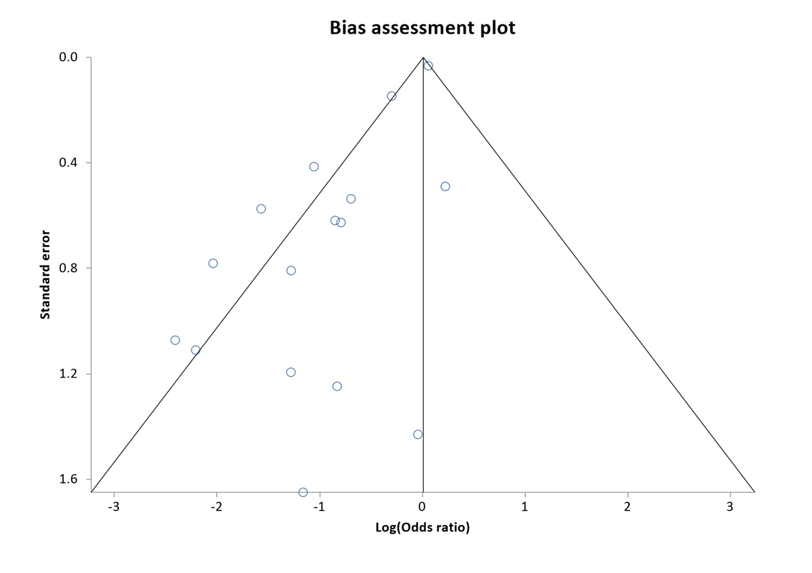
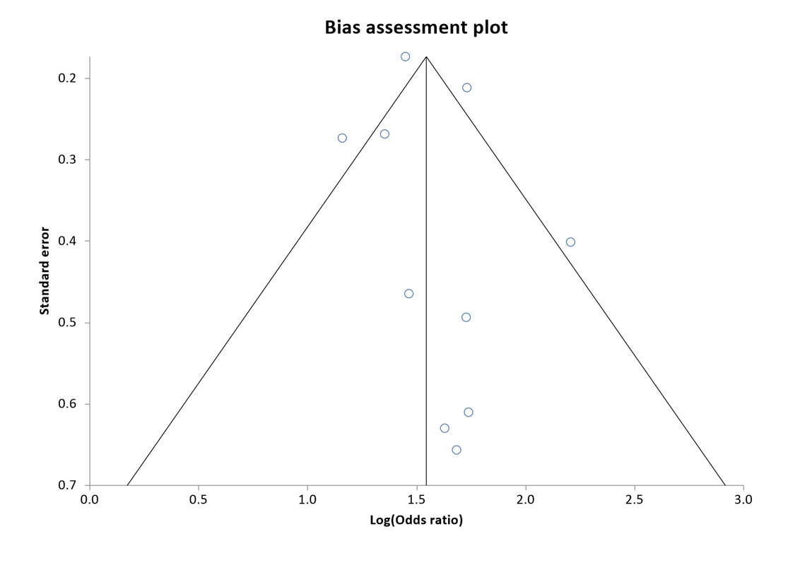

Bias Detection in Meta-analysis
- Systematic review of randomized trials is a gold standard for appraising evidence from trials, however, some meta-analyses were later contradicted by large trials (Sterne et al. 2001a).
- Plots of trials' variability or sample size against effect size are usually skewed and asymmetrical in the presence of publication bias and other biases (Sterne and Egger, 2001).
- Publication bias arises when trials with statistically significant results are more likely to be published and cited, and are preferentially published in English language journals and those indexed in Medline (Jüni et al, 2002).
- Publication and selection biased in meta-analysis are more likely to affect small trials.
- Small trials are more likely to be of poorer quality, for example inadequate blinding due to use of open random number tables.
- Small trials are more likely to show larger treatment effects due to case-mix differences (e.g. higher risk patients) than larger trials.
If there is no 'small sample' bias across a series of studies in a meta-analysis then the estimates of effect should vary (due to random error) most with the small studies and least with the large studies. This fact lead to the use of plots of sample size against effect estimate (the original funnel plot). Bias is likely to cause asymmetry in such plots.
As sample size is not the only determinant of the precision of an effect estimate, richer information for detecting bias can be gained from plotting the standard errors against their effect estimates. The reciprocal of the standard error is referred to as precision. Again, lateral asymmetry indicates bias.
StatsDirect offers the following choice of Y axes:
- standard error
- precision (1/standard error)
- sample size
- 1/sample size
- log(sample size)
- log(1/sample size)
- Mantel-Haenszel weight
The direction of the Y axis is reversed in some cases, such as the default setting, standard error, in order to make the shape of each plot an inverted cone because this has become the convention in the literature (Sterne and Egger, 2001). The most widely accepted plot is standard error (scale reversed) against effect estimate with 95% confidence intervals outlining the inverted cone. You should examine the left-right symmetry of the plot, asymmetrical plots denote small sample bias.
The best choice of x axis for detecting the small sample effect is the log odds ratio (Sterne and Egger, 2001). This is because the scale is not constrained and because the plot will be the same shape whether the outcome is defined as occurrence or non-occurrence of event.
Note that you must have more than three trials/strata in your meta-analysis for the StatsDirect bias assessment functions to work.
The following plots are from biased and unbiased meta-analyses respectively:
The biased example is an odds ratio meta-analysis (Analysis_Meta-Analysis_Odds Ratio) of the magnesium trials in the test workbook (Meta-analysis worksheet: Intervention total, Intervention deaths, Control total, Control deaths, Magnesium trial). The unbiased example is the same analysis of the smoking and lung cancer data (Meta-analysis worksheet: Smokers total, Smokers cancer, Control total, Control cancer).

Bias indicators
Begg-Mazumdar: Kendall's tau = 0.15 P = 0.4503
Egger: bias = -1.598185 (90% CI = -2.085441 to -1.110928) P < 0.0001
Harbord-Egger: bias = -1.73257 (90% CI = -2.282024 to -1.183115) P < 0.0001

Bias indicators
Begg-Mazumdar: Kendall's tau = 0.111111 P = 0.7275 (low power)
Egger: bias = 0.580646 (90% CI = -0.6025 to 1.763792) P = 0.3881
Harbord-Egger: bias = 0.792634 (90% CI = -0.56532 to 2.150587) P = 0.3094
Egger et al. (1997) proposed a test for asymmetry of the funnel plot. This is a test for the Y intercept = 0 from a linear regression of normalized effect estimate (estimate divided by its standard error) against precision (reciprocal of the standard error of the estimate). StatsDirect provides this bias indicator method with all meta-analyses. Please note that the power of this method to detect bias will be low with small numbers of studies.
Harbord et al. (2006) developed a test that maintains the power of the Egger test whilst reducing the false positive rate, which is a problem with the Egger test when there are large treatment effects, few events per trial or all trials are of similar sizes. The original Egger test should be used instead of the Harbord method if there is a large imbalance between the sizes of treatment and control groups – the same is true for the Peto odds ratio, to which this test is mathematically related. The Harbord test is calculated from the counts as they are: it needs no continuity correction.
Because these regression tests have low power, StatsDirect gives the confidence interval for the Egger and Harbord bias estimates at twice the alpha of the analysis: a 90% interval when the meta-analysis uses 95% confidence intervals, in keeping with the P < 0.1 criterion commonly used for these tests (Egger et al., 1997).
Begg and Mazumdar (1994) proposed testing the interdependence of variance and effect size using Kendall's method. This bias indicator makes fewer assumptions than that of Egger et al. but it is insensitive to many types of bias to which the Egger test is sensitive. Unless you have many studies in your meta-analysis, the Begg method has very low power to detect biases (Sterne et al., 2000).
Other statistical methods can be used to investigate the effects of study characteristics other than sample size upon effects (Sterne et al., 2002). Please seek the advice of a Statistician with regard to this.
Note that when the between-study heterogeneity is large, none of the bias detection tests work well.
See meta-analysis options for details of how to set the bias detection plot type.